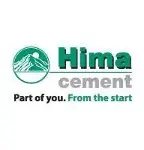
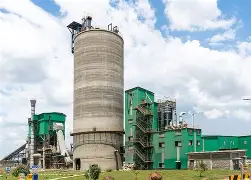

🎯
Our Mission
To provide innovative, reliable and sustainable building solutions that help people and communities build a better future.

HIMA CEMENTHima Cement supports builders with cement and construction solutions for projects of different sizes. We believe strong communities are built through thoughtful planning, reliable materials and care at every stage of construction.
At the heart of every build
Built into the process
One project at a time

To provide innovative, reliable and sustainable building solutions that help people and communities build a better future.
To be a respected building materials company in Uganda, contributing to progress through quality, service and continuous improvement.
People first, integrity, excellence and care for the communities and environment connected to our work.
Every construction project has its own needs. Homeowners may be planning a renovation, contractors may be coordinating a busy site, and designers may be specifying materials for demanding applications. Clear product information and early conversations can help teams make informed choices.
Start with the drawings, specifications and intended use. The project engineer or qualified professional can confirm the correct material and mix for structural work.
Estimate quantities with your contractor, coordinate deliveries with the work schedule and keep cement protected from moisture until it is needed.
Good construction depends on workmanship as well as materials. Follow product instructions, use appropriate protective equipment and ask for advice when something is unclear.
Explore the product range or contact the team with questions about availability and the right next step.
Explore Our Products →